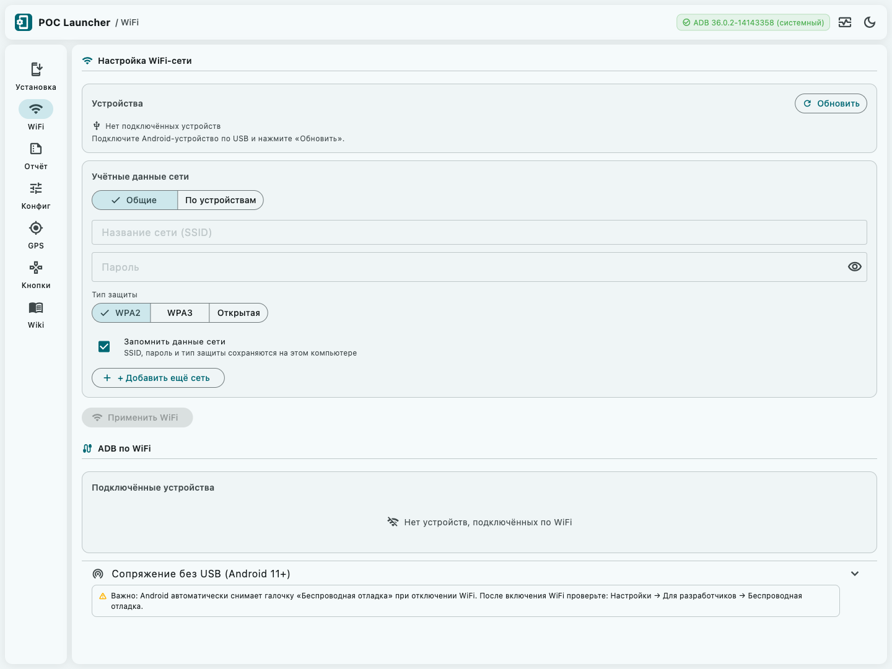
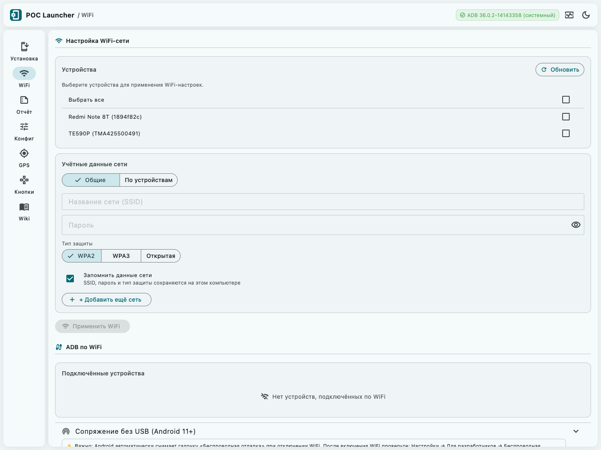
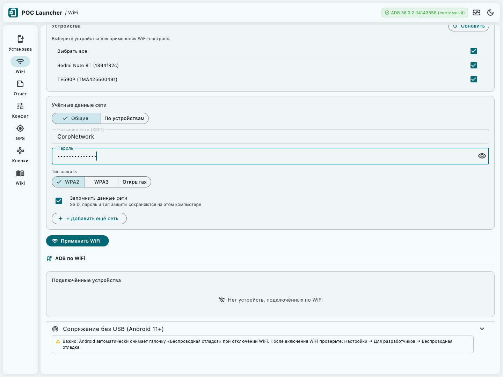
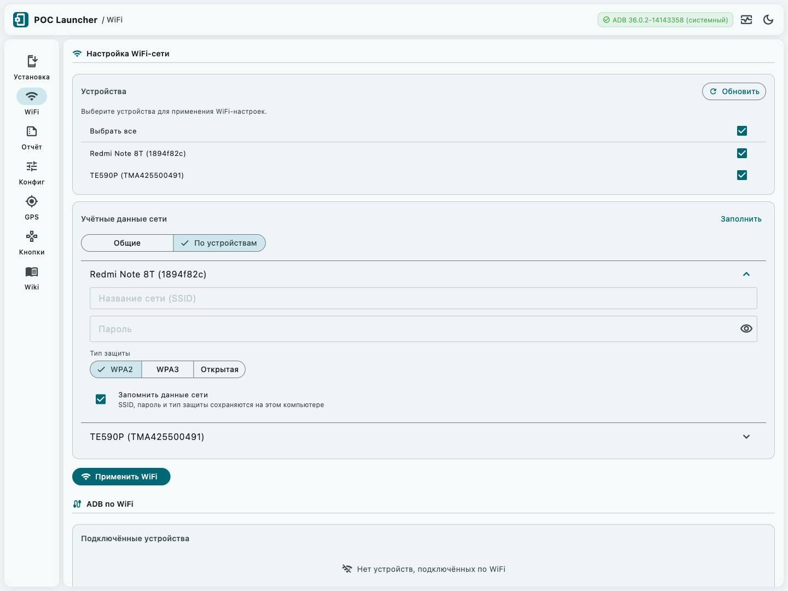
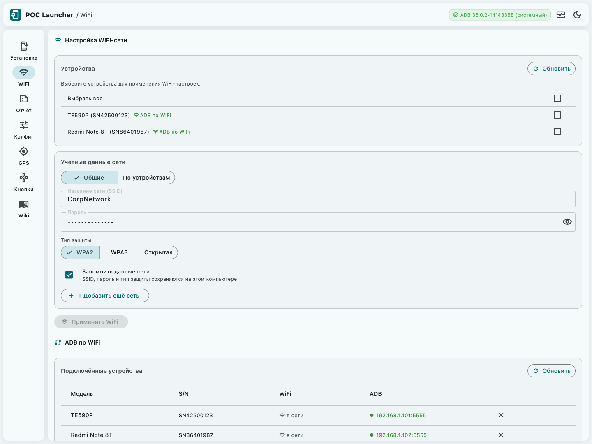
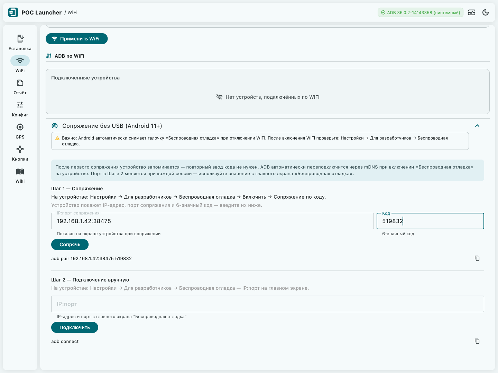

Вкладка «WiFi» — руководство
Настройка WiFi-сети на Android-устройствах и управление беспроводным ADB-подключением.
Настройка WiFi-сети
Первая секция вкладки позволяет применить параметры WiFi-сети (SSID и пароль) сразу на несколько Android-устройств через USB без ручного ввода на каждом. Требуется Android 10+ (API 29+).

Блок «Устройства»
Показывает Android-устройства, подключённые по USB. Галочки определяют, на какие из них применятся WiFi-настройки при нажатии Применить WiFi.
- При нескольких устройствах появляется чекбокс «Выбрать все» с поддержкой промежуточного состояния.
- Устройствам с уже настроенным WiFi или активным ADB по WiFi рядом с именем показывается значок ADB по WiFi или настроен.
- При отключении USB-устройства оно автоматически убирается из выбранных.
- Обновить — перечитывает список устройств через ADB.


Блок «Учётные данные»
Переключатель Общие / По устройствам в верхней части блока задаёт режим ввода.
Режим «Общие»
Одни и те же SSID/пароль применяются ко всем выбранным устройствам.
- + Добавить ещё сеть — устройство получит несколько сетей и подключится к первой доступной. Ненужную сеть удаляет иконка корзины (с подтверждением).
- Пароль скрыт по умолчанию; кнопка 👁 показывает/скрывает.
Режим «По устройствам»
Каждое устройство разворачивается в отдельный аккордеон со своей формой.
Кнопка Заполнить в заголовке блока подставляет общие данные во все формы сразу.
| Поле | Описание |
|---|---|
| Название сети (SSID) | Точное название WiFi-сети. Регистр важен. Найти: наклейка роутера или Настройки → WiFi на телефоне. |
| Пароль | Пароль сети. Для открытых сетей поле заблокировано. |
| Тип защиты |
WPA2 — большинство корпоративных сетей. WPA3 — новые роутеры 2020+. Открытая — без пароля. |
| Запомнить данные сети | SSID, пароль и тип сохраняются между запусками приложения на этом компьютере. Тип защиты сохраняется всегда, независимо от чекбокса. |


Кнопка «Применить WiFi»
Активна, если выбрано хотя бы одно устройство и заполнен SSID. При нажатии для каждого выбранного устройства последовательно:
- Выполняет
adb shell cmd wifi connect-network SSID [WPA2|WPA3] парольчерез USB. - Проверяет подключение через
adb shell dumpsys wifi— ищетCONNECTED + SSID. - Автоматически переключает успешные устройства на ADB по WiFi (TCP/IP).
- Обновляет статусы в таблице «Подключённые устройства».
Результат применения
После завершения устройства появляются в таблице «Подключённые устройства» со статусом в сети и зелёным IP-адресом в колонке ADB — без USB они уже доступны для установки.

ADB по WiFi
Вторая секция управляет беспроводными ADB-подключениями и сохраняет устройства между сеансами работы.
Блок «Подключённые устройства»
Единая таблица всех устройств, известных приложению в контексте WiFi и TCP. Обновляется автоматически каждые 5 секунд.
| Колонка | Что показывает |
|---|---|
| Модель | Название модели из ro.product.model (напр. TE590P). — если не удалось получить. |
| S/N | Аппаратный серийный номер (ro.serialno). Не меняется при переключении USB↔WiFi — ключ идентификации устройства. |
| WiFi | Результат последнего применения настроек через «Применить WiFi». Сбрасывается при перезапуске приложения. |
| ADB | Статус беспроводного ADB-подключения (adb connect IP:port). Зелёный IP = устройство доступно без USB. |
| (действие) |
— отключить (устройство остаётся в списке если сохранено). — забыть (удалить из сохранённых). |
Статусы колонки «WiFi»
| Статус | Значение |
|---|---|
| в сети | Устройство подключено по ADB over WiFi. Отображается с приоритетом над остальными статусами, пока есть активное TCP-соединение. |
| настроен | cmd wifi connect-network выполнен, dumpsys wifi подтвердил CONNECTED + SSID. |
| не подтверждён | Команда отправлена, но dumpsys wifi не нашёл подтверждения. Устройство ещё подключается — попробуйте снова через 10–15 секунд. |
| вручную | Android < 10 (API < 29) — команда cmd wifi недоступна. Настройте WiFi вручную: Настройки → WiFi на устройстве. |
| ошибка | Исключение при выполнении ADB-команды. Проверьте USB-соединение и права ADB. |
| — | «Применить WiFi» для этого устройства ещё не запускался в текущей сессии. Статус не сохраняется между перезапусками. |
Статусы колонки «ADB»
| Отображение | Значение и действие |
|---|---|
| 192.168.x.x:5555 | Устройство подключено по ADB over WiFi. Доступно для установки без USB. Нажмите ✕ для отключения. |
| Подключение… | Идут попытки adb connect с паузами. Ждите, не нажимайте кнопки повторно — это не зависание. |
| Нет связи | Все попытки исчерпаны. Причины: устройство выключено или перезагружено, сменился IP, ADB-порт 5555 закрыт. Нажмите Повторить. |
| Подключить | Устройство сохранено или видно по USB, но TCP-соединение не активно. Нажмите для подключения. |
Логика автоматических повторов (retry)
Приложение никогда не делает одну попытку подключения — запускается цикл повторов с паузой 3 секунды:
| Сценарий | Попыток | Пауза | Итого |
|---|---|---|---|
| После «Применить WiFi» | 6 | 3 сек | до 18 сек |
| «Подключить» / «Повторить» | 3 | 3 сек | до 9 сек |
| «Переподключить» / авто при старте | 3 | 3 сек | до 9 сек |
adb shell ip route) и переподключается по новому IP — вмешательства не требуется.
Кнопки блока «Подключённые устройства»
| Кнопка | Когда видна | Действие |
|---|---|---|
| Переподключить | Есть сохранённые устройства со статусом «Нет связи» или «отключено» | Запускает цикл retry для всех таких устройств одновременно |
| Обновить | Всегда | Перечитывает список TCP-устройств из ADB и синхронизирует статусы |
Сохранение устройств
Устройства, к которым удалось подключиться по TCP хотя бы раз, сохраняются автоматически. При следующем запуске приложение пробует переподключиться к ним. Нажмите кнопку «Забыть устройство» (корзина), чтобы удалить его из сохранённых.
Сопряжение без USB (Android 11+)
Блок находится в нижней части вкладки WiFi — разворачивается по клику. Используется для первичного сопряжения устройства с компьютером без USB-кабеля.
— Порт сопряжения (из диалога «Сопряжение по коду») — временный, ~38 000–39 000.
— ADB-порт (с главного экрана «Беспроводная отладка») — постоянный, для подключения.
Шаг 1 — Сопряжение
На устройстве
- Настройки → Для разработчиков → Беспроводная отладка → переключить в ON.
- Нажать «Сопряжение устройства по коду».
- Появится диалог: IP-адрес, порт сопряжения (5 цифр) и 6-значный код. Код истекает примерно через 60 секунд.
В приложении
- В поле IP:порт сопряжения ввести данные из диалога:
192.168.x.x:38475. - В поле Код ввести 6-значный код:
519832. - Нажать Сопрячь и дождаться SnackBar-подтверждения.

Шаг 2 — Подключение
На устройстве
Закрыть диалог и вернуться на главный экран «Беспроводная отладка».
Там отображается IP:ADB-порт — постоянный адрес для ADB-подключения.
В приложении
- В поле IP:порт (Шаг 2) ввести адрес с главного экрана:
192.168.x.x:45231. - Нажать Подключить.
- Устройство появится в таблице со статусом IP:порт.
Рядом с кнопками отображается ADB-команда, которую приложение выполнит. Иконка копирования позволяет скопировать её в буфер и выполнить вручную в терминале.
adb pair 192.168.1.42:38475 519832 # Шаг 1
adb connect 192.168.1.42:5555 # Шаг 2Частые ошибки
| Симптом | Причина | Решение |
|---|---|---|
| protocol fault (couldn't read status message) | Неверный порт сопряжения или код истёк (~60 сек) | Открыть диалог «Сопряжение по коду» заново и ввести новые данные |
| bad port number '123456' | В поле «IP:порт» Шага 2 введён 6-значный код вместо адреса | Ввести IP:порт с главного экрана «Беспроводная отладка», не из диалога сопряжения |
| SnackBar «Ошибка сопряжения» после «Сопрячь» | Введён ADB-порт вместо порта сопряжения, или код истёк | Проверить, что в Шаге 1 введены данные из диалога «Сопряжение по коду» (не с главного экрана) |
| После «Подключить» ничего не происходит | Введён порт сопряжения вместо ADB-порта | Перейти на главный экран «Беспроводная отладка» и скопировать правильный порт |